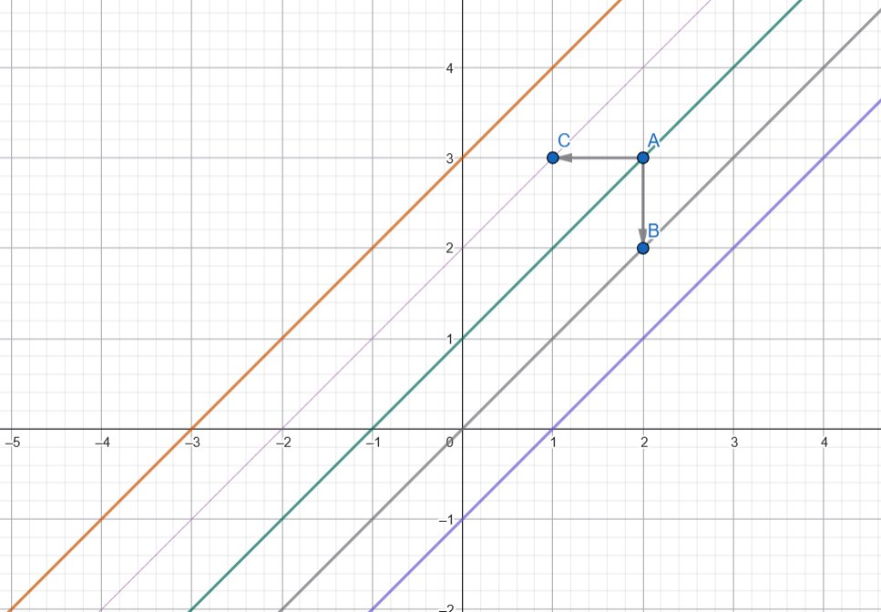
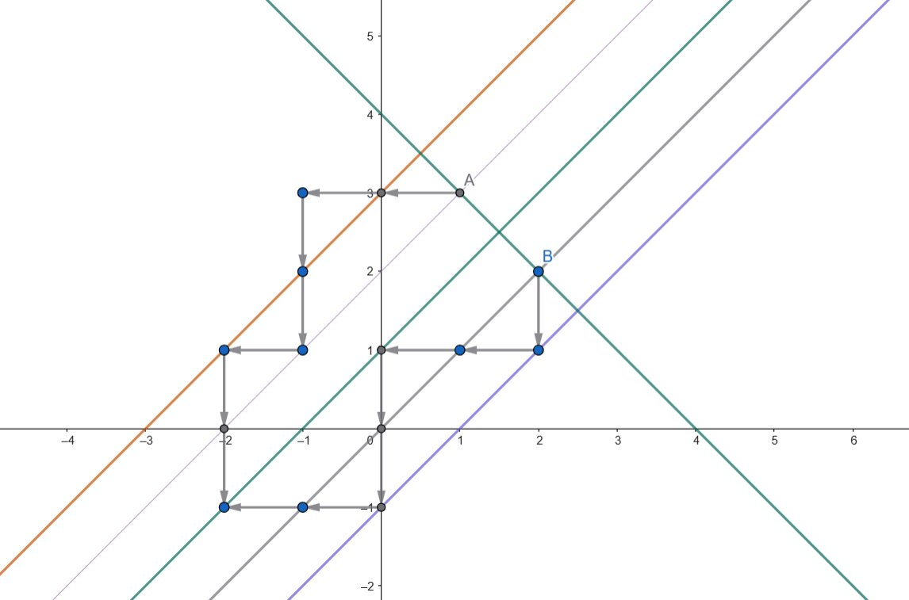

A Functional Equation Problem Using Random Walk
Recently, I had the chance to visit the blog of Nor (you should follow him if you enjoy Maths and competitive programming) and saw a Maths Olympiad problem solved using martingales. I took a martingale class last semester so it raised in me a strong interest. It has been a long time since I seriously tackled a Maths Olympiad problem, so I felt a bit confused when dealing with this type of problem. Here is the problem:
Let's revisit the definition of a random walk. In mathematics, a random walk is a stochastic process describing a path consisting of a succession of random steps on some mathematical space.
A simple example: the space is \( \mathbb{Z} \). Starting from an initial point, at each step we move either left or right. We set \( X_n \) to be our position after the \( n \)-th move. Then \( (X_n)_n \) is a stochastic process — a random walk.
More formally, using i.i.d. \( (\epsilon_n)_n \) valued in \( \{-1, 1\} \): \[ \mathbb{P}(\epsilon_n = 1) = p, \quad \mathbb{P}(\epsilon_n = -1) = 1 - p \] \[ X_n = X_{n-1} + \epsilon_n, \quad X_0 = a \in \mathbb{Z} \]
We can generalize to \( \mathbb{Z}^d \), where at each step there are \( 2d \) possible moves. Viewed as a Markov chain, random walks are irreducible with the following dichotomy:
- For \( \mathbb{Z} \) and \( \mathbb{Z}^2 \), the walk is recurrent — it returns to its starting point infinitely often with probability 1.
- For \( \mathbb{Z}^d \) with \( d \geq 3 \), the walk is transient.
When the walk is uniform, i.e. \( \mathbb{P}(\epsilon_n = 1) = \mathbb{P}(\epsilon_n = -1) = \frac{1}{2} \), it is a martingale. Recall that a stochastic process \( (X_n)_n \) is a martingale with respect to a filtration \( (\mathcal{F}_n)_n \) if:
- \( (X_n)_n \) is adapted to \( (\mathcal{F}_n)_n \), i.e. \( X_n \) is \( \mathcal{F}_n \)-measurable.
- \( X_n \in L^1 \), i.e. \( \mathbb{E}[|X_n|] < +\infty \).
- \( \mathbb{E}[X_{n+1} \mid \mathcal{F}_n] = X_n \).
Why is the original problem related to random walks? For a 1-d random walk on \( \mathbb{Z} \), if \( f \) is bounded and measurable, by independence: \[ \mathbb{E}[f(X_n)] = \mathbb{E}[f(X_{n-1} + \epsilon_n)] = \frac{\mathbb{E}[f(X_{n-1}+1)] + \mathbb{E}[f(X_{n-1}-1)]}{2} \] This mirrors our functional equation exactly.
The intuition: if the current point is \( (x,y) \), then \( (x-1, y) \) is a left move and \( (x, y-1) \) is a down move. We model \( Z_n = (X_n, Y_n) \) as a random walk with two possibilities (left/down), using i.i.d. \( (\epsilon_n)_n \) valued in \( \{(0,-1),(-1,0)\} \): \[ \mathbb{P}(\epsilon_n = (0,-1)) = \mathbb{P}(\epsilon_n = (-1,0)) = \frac{1}{2} \] \[ Z_n = Z_{n-1} + \epsilon_n, \quad Z_0 = (x,y) \in \mathbb{Z}^2 \]
Although this looks like a 2-d random walk, it is essentially 1-dimensional. Notice that each step moves \( Z_n \) from the line \( x - y = k \) to \( x - y = k \pm 1 \). So introducing \( K_n = X_n - Y_n \), we get a uniform 1-d random walk that perfectly captures the dynamics of \( Z_n \).

The first two martingale conditions are easily verified. For the third:
\begin{align*} \mathbb{E}[f(Z_{n+1}) \mid \mathcal{F}_n] &= \mathbb{E}[f(Z_n + \epsilon_{n+1}) \mid \mathcal{F}_n] \\ &= \frac{f(X_n-1, Y_n) + f(X_n, Y_n-1)}{2} \\ &= f(X_n, Y_n) = f(Z_n) \end{align*}By the martingale property, taking expectations gives \( \mathbb{E}[f(Z_n)] = \mathbb{E}[f(Z_0)] \).
Goal: Show that if \( x + y = x' + y' \) then \( f(x,y) = f(x',y') \).
Let \( (Z_n)_n \) and \( (Z'_n)_n \) be two random walks starting at \( (x,y) \) and \( (x',y') \)
respectively. Then:
\[
\mathbb{E}[f(Z_n)] = f(x,y), \quad \mathbb{E}[f(Z'_n)] = f(x',y')
\]
We estimate:
\[
|f(x,y) - f(x',y')| = |\mathbb{E}[f(Z_n) - f(Z'_n)]| \leq \mathbb{E}[|f(Z_n) - f(Z'_n)|]
\]
Since \( K_n = X_n - Y_n \) is a recurrent 1-d random walk and the condition \( x + y = x' + y' \)
ensures the two walks stay on the same antidiagonal sum, they will meet at a finite time almost
surely.

It remains to show \( f \) is constant across different lines. Using the functional equation:
since \( (x+1) + (y-1) = x + y \), so \( f(x+1, y-1) = f(x,y) \). We conclude that the only solutions are constant functions.